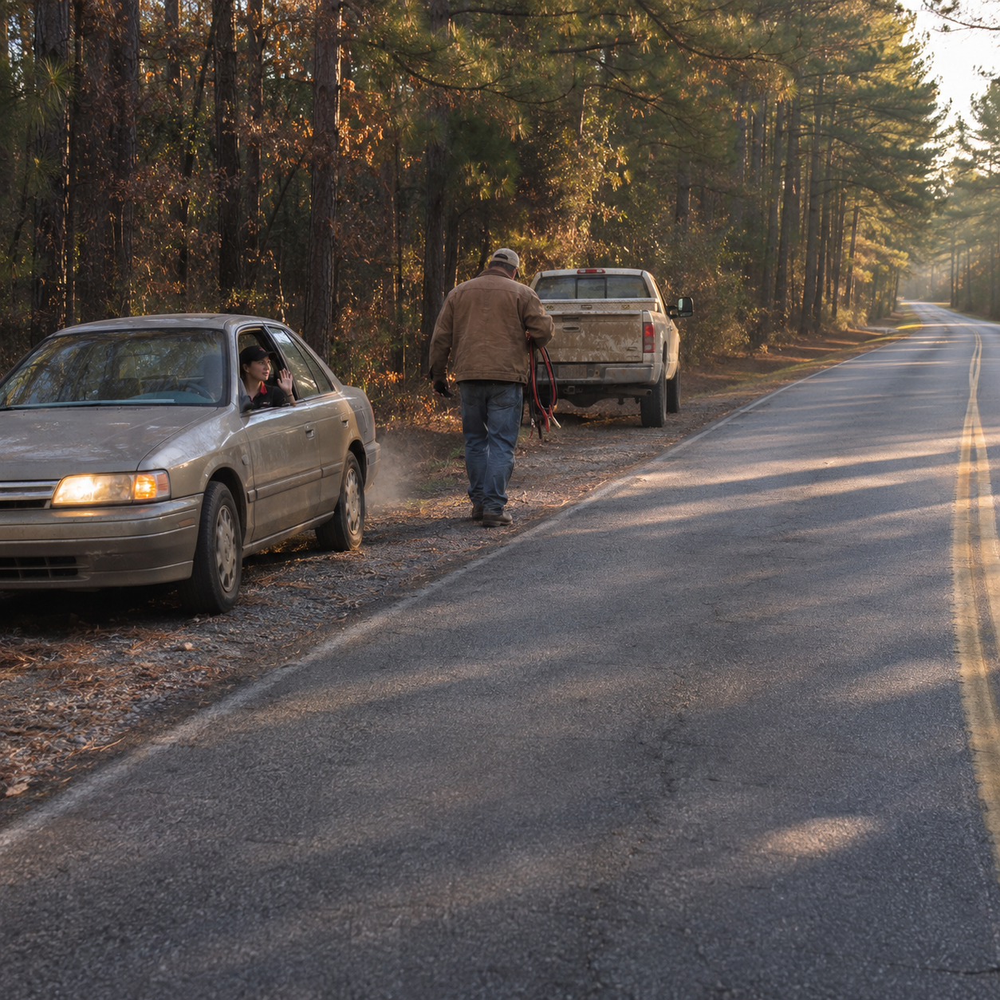

The people who help without making you feel small. There's a particular kindness in somebody fixing a problem without demanding an explanation, an audience, or a lifetime of gratitude.
Most people who need help already know they need it, and most of us put off asking until we've run out of other options. By then the problem has usually been embarrassing us for a while. So when somebody wants the whole story before they'll lift a finger, they're asking you to go back over how you got there out loud, and that costs you something even if the help comes after.
An audience works the same way. When help has to be seen, part of it is for the person doing the helping, and the one being helped can tell. They end up as the setting for somebody else's good deed, and nobody feels very big standing in that spot.
Gratitude is a fine thing, and most people are glad to give it. But when help comes with the expectation that you'll be thankful for the rest of your life, you never quite finish paying for it, and every time that person comes around you remember where you were standing when you needed them.
The other kind of help just takes care of the problem and lets it drop. It doesn't need you to account for yourself or keep score afterward, so you walk away the same size you were before. That matters more than people realize, because it tells you the person who helped never thought less of you for needing it.
If you've had somebody help you that way, you probably still remember it. And when the chance comes to do the same for somebody else, I hope we'll help the way they did, without making anybody feel small.